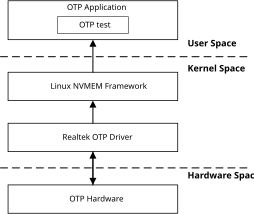
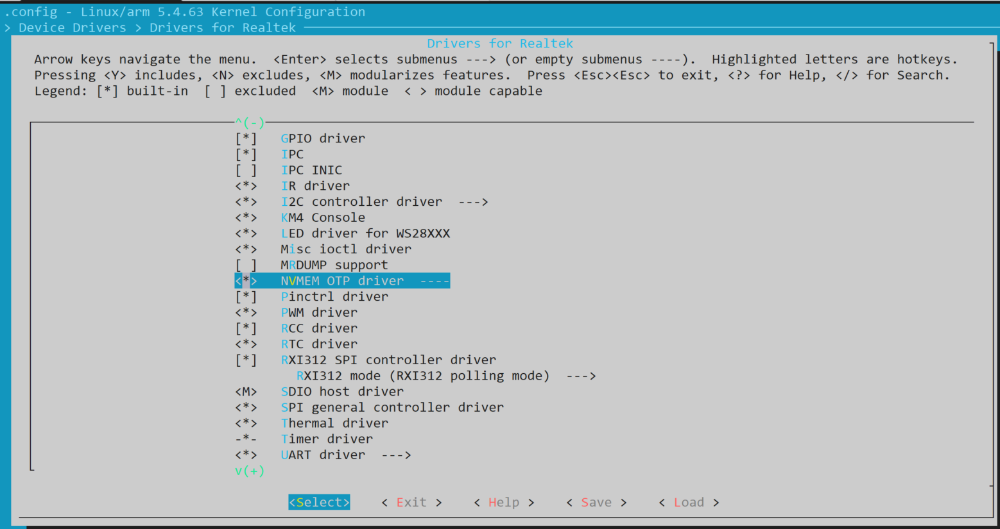
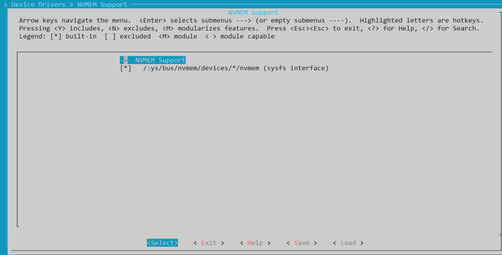
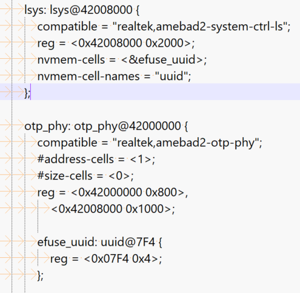

Introduction
Architecture
The OTP driver follows Linux NVMEM framework, controls the firmware OTP controller, and performs the write and read of OTP. The OTP software architecture is illustrated in figure below.
{kind=link}

OTP software architecture
The OTP driver provides the following two ways to control the hardware OTP device:
For user space, Linux NVMEM framework provides sysfs device for users to read and write.
For kernel space, Linux driver can control OTP device through NVMEM cell functions.
Implementation
The OTP driver is implemented as following files:
Driver location |
Introduction |
|---|---|
|
OTP driver Kconfig |
|
OTP driver Makefile |
|
OTP driver source code. |
Configuration
Build Configuration: Select Device Drivers > Drivers for Realtek > NVMEM OTP driver.
{kind=link}

OTP driver
APIs
APIs for User Space
Just as mentioned above, Linux NVMEM framework provides sysfs device for user space to control the OTP device. Currently Realtek’s OTP driver provides two sysfs interfaces (/sys/bus/nvmem/devices/otp_raw0/nvmem and /sys/bus/nvmem/devices/otp_map0/nvmem) for user space to control the OTP device.
otp_raw0device controls the physical map.otp_map0device controls the logical map.
The usage of demo is listed below:
efuse rraw/rmap [addr hex] [bytes]
efuse wraw/wmap [addr hex] [bytes] [val hex]
For example:
Read value from physical address
0x07F4~0x07F8:efuse rraw 7F4 4
Write the new value
0x021b1c1dto logical address0x01e0~0x01e4:efuse wmap 1e0 4 021b1c1d
Refer to sources/development/cmds/efuse/efuse.c for more details.
If you want to disable APIs for user space, disable sysfs interface in kernel config as below:
{kind=link}

Sysfs interface
APIs for Kernel Space
For kernel space, NVMEM provides cell mechanism for other drivers to read or write the OTP, such as:
{kind=link}

Nvmem-cell example
Drivers can use NVMEM cell functions to get or set the corresponding OTP values.